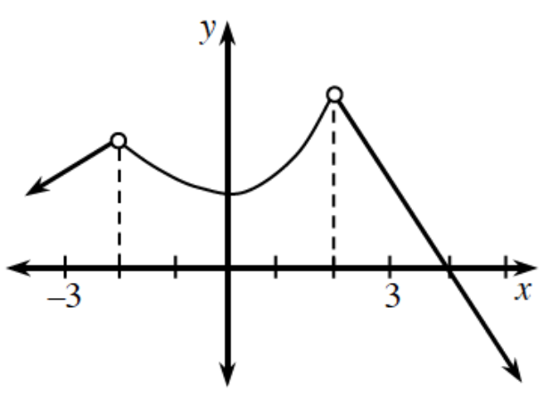
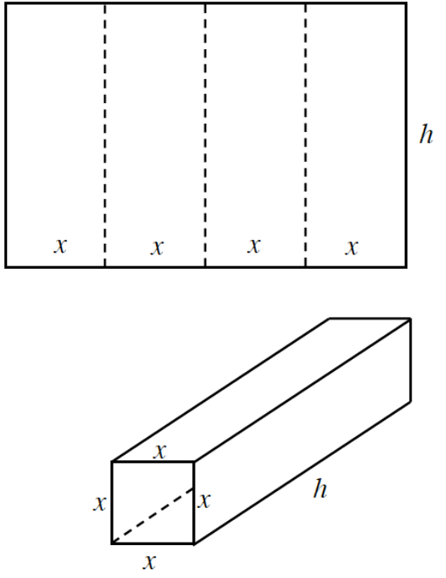
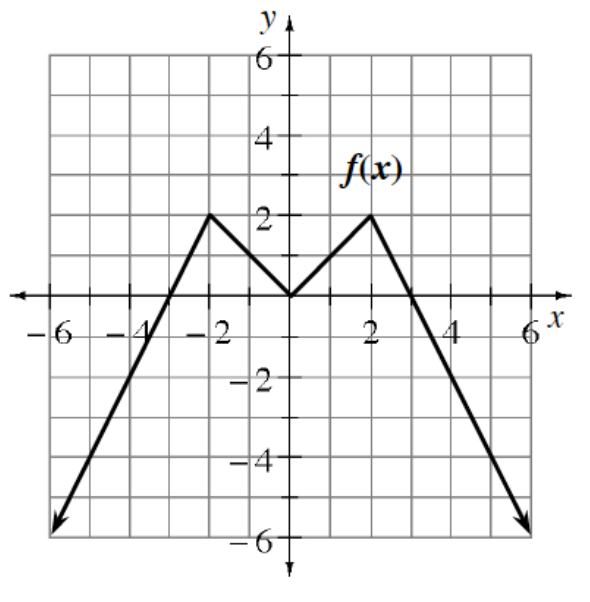

The same car from problem 7-80 travels \(d(t)=10t^2\) feet in the first \(t\) seconds after it starts. Calculate the average velocity on each of the intervals as they approach \(t=4\) seconds.
\(4\le t\le 5\)
\(4\le t\le 4.1\)
\(4\le t\le 4.01\)
\(3.99\le t\le 4\)
\(3.999\le t\le 4\)
The graph of \(y=g(x)\) is shown at right. Does \(\lim_{x\to 0} g(x)\) exist for

\(b=-3\)?
\(b=-2\)?
\(b=2\)?
All values of \(b\) in the interval \(-3
Is the function continuous at \(x=2\)? Explain.
Given the function \(f(x)=x^2+3x+2\), show that the average rate of change from \(x=4\) to \(x=4+h\) is \(11+h\).
Evaluate the following limits using either a calculator or algebra.
\(\lim_{x\to 4}\frac{x^2-8x+16}{x-4}\)
\(\lim_{x\to 2}\frac{x^3-8}{x-2}\)
\(\lim_{x\to 4}\frac{f(2+x)-f(2)}{x}\) where \(f(x)=3x-4\)
\(\lim_{x\to 0}\frac{g(3+x)-g(3)}{x}\) where \(g(x)=\frac{6}{x}\)
A rectangular piece of cardboard has a perimeter of \(24\) feet. The cardboard is creased in such a way that it can be folded to form a square tube with open ends as shown in the diagram.

Write an equation for the volume of the box in terms of \(x\) and \(h\).
Now, write the volume of the box using only \(x\).
What is an appropriate domain for the function you write in part (b)?
Graph the volume function and locate the point that represents the maximum volume.
There is an error in each of the following equations. Explain the error in each case then correct it.
\(\log(4)+\log(5)=\log(9)\)
\(\log_e(7)+\log_e(7)=\log_e(49)\)
\(\log(5x)=\log(4)+\log(5x)\)
\(\log(4+5)=\log(4)+\log(5)\)
Given the graph of \(y=f(x)\) at right, sketch graphs of the following.

\(y=-f(x)+2\)
\(y=\frac{1}{2}f(x+2)\)
Three forces act on an object of negligible mass. The forces have magnitudes and directions as follows: \(F_1: 23\text{ N},\,\theta=16^\circ\qquad F_2: 100\text{ N},\,\theta=-85^\circ\qquad F_3: 88\text{ N},\,\theta=110\).
What is the magnitude and direction of the resultant force?